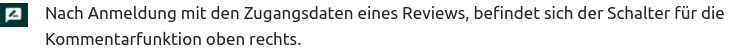

Vorbetrachtungen
Eine Studiendurchführung kann schnell komplex werden und eine Reihe von Anforderungen stellen. Daher sollten die Vorbereitungszeiten nicht unterschätzt werden und entsprechende Zeiträume dafür eingeplant werden. Es sollte zuerst bestimmte Vorbetrachtungen angestellt werden. Diese Vorbetrachtungen können abschließend entscheiden, ob eine Studie wie geplant stattfinden kann.
Systemanforderungen
Da die Programmierungen des Testcenters online in einem Browser ablaufen, ist keine vorherige Installation von Software auf einem Computer nötig, mit dem der Test oder die Befragung durchgeführt werden soll. Es ist nur ein Internet-Zugriff und ein Browser nötig.
Es gibt immer wieder die Diskussion darüber, ob bzw. in welchem Maße ältere Browser bzw. Browserversionen unterstützt werden sollen. Hier wird argumentiert, dass Schulen bzw. deren Träger oft nicht in der Lage seien, die Verwendung aktueller Browser sicherzustellen. Aus dieser Realität ergebe sich, dass die Programmierungen für TBA stets ein Maximum an Abdeckung auch für alte Browser leisten müssten.
Das IQB folgt hier jedoch den Anforderungen an die Datensicherheit, so wie es z. B. das Bundesamt für Sicherheit in der Informationstechnik formuliert:
“Der Internet-Browser ist die zentrale Komponente für die Nutzung von Online-Angeboten und stellt somit eins der beliebtesten Ziele für Cyber-Angriffe dar. Hieraus ergibt sich ein besonders hohes Gefahrenpotenzial.” Quelle
“Installieren Sie alle Aktualisierungen sofort oder zeitnah nach ihrer Veröffentlichung, sowohl die für Ihren Browser, als auch für alle Erweiterungen und natürlich Ihr Betriebssystem. Verwenden Sie stets die neuste Version Ihres Browsers.” Quelle
Das IQB unterstützt daher nur die jeweils letzten beiden Hauptversionen eines Browsers bzw. die Versionen der letzten 12 Monate.
Stand April 2024:
- Firefox: 125 und 124
- Chrome: 123 und 122
- Edge: 124 und 123
- Safari: 17 und 16
Neu veröffentliche Browserversionen können unter Umständen Änderungen enthalten, die zu einem anderen Verhalten der Anwendung führen. Das IQB ist daher bemüht die Anwendung zeitnah in Verbindung mit Neuerscheinungen zu testen, kann dies aber nicht in jedem Fall gewährleisten, da die Vielzahl an möglichen neuen Browserversionen (Safari, Edge, Chrome, Firefox) recht herausfordernd ist. Sollten bereits neuere Versionen, als die hier genannten Versionen zum Einsatz kommen, empfiehlt sich eine Voransicht vor finalem Studienlauf. Hierfür bietet das Testcenter spezielle Modi der Studiendurchführung an, wie bspw. einen Review-Mode. Für einzelne Aufgaben zur Ansicht kann auch der System-Check verwendet werden.
Ist von einem fehlerhaften Verhalten der Anwendung in Verbindung mit neueren Browserversionen auszugehen, kann eine Meldung an das Entwicklerteam erfolgen.
Es gibt abenteuerliche Erweiterungen für Browser (Plugins), die mehr Sicherheit, bessere Performance, weniger Werbung, mehr Privatsphäre usw. versprechen. Oft greifen diese Erweiterungen aber massiv in die Kommunikation des Browsers mit dem Server ein und verfälschen Daten. Bei Problemen sollte man also diese Add-Ons usw. zumindest zeitweise deaktivieren.
Um die Browserversionen zu überprüfen kann im Vorfeld ein System-Check durchgeführt werden.
Vorschau
Vor finaler Studiendurchführung kann es sinnvoll sein, die Aufgaben anderen Personen zugänglich zu machen. So können mit Hilfe der integrierten Kommentarfunktion entsprechende Hinweise zu den Aufgaben hinterlassen werden. Am Ende der Review-Phase können diese Hinweise zur Aufgabenoptimierung genutzt werden. Das Testcenter stellt diese Kommentarfunktion zur Verfügung, wenn in der XML zur Studien-Definition ein bestimmter Modus (run-review) für einen Zugang festgelegt wird. Jeder Kommentar wird dann gespeichert und kann abschließend ausgewertet werden.

Es kann auch mit Hilfe des System-Checks im Vorfeld eine Aufgabe betrachtet werden. Im Gegensatz zum Review-Mode, können aber nicht mehrere Aufgaben betrachtet und kommentiert werden.
E2E-Testungen
Um Funktionen, wie bspw. die beschränkte Navigation (response und presentation complete), Beschränkungen in Blöcken und andere in der XML zur Testheft-Definition festgelegte Konfigurationen zu überprüfen, können E2E-Testungen zum Einsatz kommen. Diese Testungen können einmalig durchgeführt werden, sollten aber nach jedem Update der Testcenter-Version erneut durchgeführt werden. Somit wird in gewissem Umfang sichergestellt, dass die Testcenter-Instanz nach dem Update ordnungsgemäß funktioniert. Bevor das IQB neue Testcenter-Versionen veröffentlicht, werden diese Versionen natürlich im Haus getestet. Da eine Version aber in der eigenen komplexen IT-Struktur integriert wird, schafft der Test zusätzliche Sicherheit. Mehr zu Thema E2E-Test ist im Kapitel: Installation/Testen der Anwendung zu finden.
Lastverhalten
Um eine Studie durchführen zu können, ist die Leistungsfähigkeit des verwendeten Servers ausschlaggebend. Es wird daher empfohlen einen Lasttest im Vorfeld durchzuführen. Mehr zu diesem Thema ist dem Kapitel: Installation/Lastverhalten zu entnehmen.
Organisation
Die Beteiligten brauchen rechtzeitig klare Anweisungen, wie die Studie vorbereitet, durchgeführt und ausgewertet wird. Hierzu sind zunächst eine Reihe von Fragen zu beantworten und ggf. bestimmte Schritte vorzuziehen. Mitunter müssen die Festlegungen in Dokumenten festgehalten und verschickt werden: allg. Handreichungen, Manual für die Testleitung, Anschreiben für System-Check, Anträge beim Datenschutz, Elternanschreiben, usw. Eine Studie sollte daher langfristig geplant sein und gut durchdacht sein.
Einsatz von audiovisuellen Medien
Videos und Audios sollten reduziert zum Einsatz kommen, um die Testheftgröße gering zu halten. Das wirkt sich positiv auf das Ladeverhalten aus. Damit es bei der Wiedergabe zu keinen Problemen kommt, ist es außerdem wichtig Audios und Videos entsprechend aufzubereiten. Das IQB empfiehlt die folgenden Einstellung für Audio und Video:
Audio
Audios mit geringem Anspruch an die Qualität (nur Sprache):
- Kompression: MP3
- Kanal: Stereo
- Abtastrate: 24000 Hz
- Bitraten Modus: Konstant
- Bitrate: 64kbps
Audios mit höherem Anspruch an die Qualität (Musik enthalten):
- Kompression: MP3
- Kanal: Stereo
- Abtastrate: 44100 Hz
- Bitraten Modus: Konstant
- Bitrate: 96kbps
Video
- Kompression: h.264 (MPEG-4 AVC)
- Kanal: Stereo
Liegen Medien in anderen Formaten vor oder weisen nicht die genannten Eigenschaften auf, können diese während der Studiendurchführung eventuell nicht wiedergegeben werden.
Endgeräte
Hardware und Betriebssystem spielen eine ehr untergeordnete Rolle. Da es sich um eine Webanwendung handelt, müssen die Endgeräte über eine Internetanbindung verfügen. Durchaus interessant könnte die Frage sein, welche Bildschirmgrößen mit welchen Auflösungen zum Einsatz kommen werden. Die Aufgabeninhalte verhalten sich zwar dynamisch (responsive), dennoch kann es sinnvoll sein Aufgaben bzgl. der Darstellung zu optimieren. Kommen größtenteils kleinere Tablets zum Einsatz, sind bspw. Aufgaben bestehend aus zwei Seiten nur noch bedingt lesbar. Die Frage nach den verwendeten Endgeräten sollte also nicht erst kurz vor der eigentlichen Studiendurchführung gestellt werden, sondern wenn möglich bereits in der Aufgabenentwurfsphase.
Es kann auch günstig sein in Erfahrung zu bringen, ob Tastaturen zum Einsatz kommen werden. Kommen keine Tastaturen zum Einsatz und muss während der Durchführung mit den systemeigene Tastaturen (bspw. iPad) gearbeitet werden, kann auch dies einen Einfluss auf die Aufgabengestaltung haben und sollte den Aufgabenentwickler*innen wenn möglich bekannt sein.
Werden in den Aufgaben Videos oder Audios verwendet, muss zuvor geklärt werden, ob Kopfhörer zur Verfügung stehen und wie diese an die verwendeten Endgeräte angeschlossen werden können. Je nach Studienumgebung kann es sinnvoll sein, Kopfhörer mit Geräuschunterdrückung zu verwenden.
Internetanbindung
Entscheidend für die Durchführbarkeit einer Studie ist die Internetanbindung der jeweiligen Einrichtung. Ist die Internetgeschwindigkeit zu langsam, kann der Ablauf der Studie durch nachladende Aufgabeninhalte gestört werden. Das Testcenter stellt zwei verschiedene Lademechanismen zur Verfügung. Es können beim Start einer Studie alle Inhalte des Testheftes geladen werden oder das Laden findet sukzessive während der Studiendurchführung statt. Ist die Geschwindigkeit zu langsam, dauert entweder das Laden der Studie oder das Laden einzelnen Aufgaben sehr lange. Es lässt sich an dieser Stelle keine pauschale Mindestanforderung festlegen, weil einfach zu viele Faktoren eine Rolle spielen. Entscheidend dürften hier die Testheftgrößen sein. Kleinere Testheftgröße bzw. Aufgaben mit wenigen Grafiken, Videos oder Audios könnten auch bei einer schlechten Anbindung noch annehmbar schnell geladen werden, während größere Testhefte Probleme bereiten. Es kann an dieser Stelle nur empfohlen werden, die Testhefte vor Studiendurchführung unter Realbedingungen zu testen. Es kann auch im Vorfeld ein System-Check durchgeführt werden. Der System-Check kann die Internetgeschwindigkeit prüfen und es können Aufgaben in einer Vorschau betrachtet werden. Ist im Vorfeld bekannt, dass die Einrichtung, in der eine Studie durchgeführt werden soll, über eine schlechte Anbindung verfügt, kann dies auch bereits bei der Aufgabenentwicklung berücksichtigt werden.
Es sollte in jedem Fall versucht werden Testhefte so klein wie möglich zu halten. Dies wirkt sich positiv auf das Ladeverhalten aus. Wenn möglich sollten Videos und Audios nur reduziert zum Einsatz kommen. Das ist ist nicht jedem Fall möglich. Daher sollte beim Einsatz solcher Medien zumindest auf die richtigen Komprimierung geachtet werden (Bsp. Audio in MP3 und nicht in WAV).
Das Testcenter kann auch offline betrieben werden. Hierfür wird das Testcenter auf einem PC installiert und die entsprechenden Endgeräte werden mit diesem verbunden. Der PC fungiert dann als Server.
IT Sicherheitsstrukturen
Manche IT-Sicherheitskonzepte in den Einrichtungen können die Studiendurchführung stören oder gänzlich unmöglich machen. Daher ist es wichtig zuvor die Erreichbarkeit des Testcenters aus dem Netz der Einrichtung heraus zu prüfen.
Zugangsverwaltung
Wie genau soll die Anmeldung der Testperson erfolgen? Durch die Testaufsicht, oder nur teilweise, oder nur durch Link usw.? Es stehen einige Optionen zur Verfügung. Das Anlegen der Zugänge findet in der XML zur Studien-Definition statt.
Steuerung der Studie
Es können Hilfsmittel zur Taktung, Steuerung und Beobachtung einer Studie zum Einsatz kommen. Das Testcenter stellt hierfür den Gruppenmonitor zur Verfügung. Soll dieser durch die Testleitung verwendet werden, sollte die Testleitung zuvor instruiert werden. Dies kann bspw. durch beigefügte Handreichungen oder den Verweis auf dieses Wiki erfolgen.
Zusatzmaterialien
Welche Zusatzmaterialien werden vor Ort benötigt: Taschenrechner, Lineal, Notizpapier, Kopfhörer?
Studien Support
- Soll es eine Hotline geben? Für welchen Zeitraum?
- Wie hoch ist das Risiko für technische Probleme? Soll jemand aus der Systemadministration oder Programmierung ständig greifbar sein?